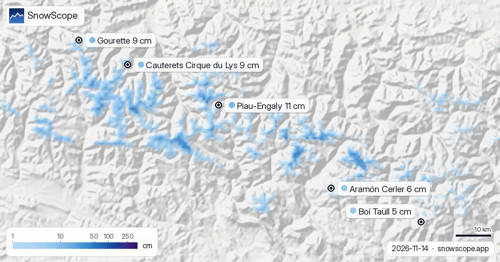

Cosa portare per sciare sui Pirenei: neve fresca polverosa a Piau-Engaly (14 novembre)
Leggi la neve sui Pirenei di oggi e ottieni neve fresca polverosa, neve sottile di inizio stagione e aria mite che può lasciare una crosta. Ecco quindi la lista dell'attrezzatura, località per località, e quando uscire. Sul campo portiamo sempre una sonda; numeri come questi ti dicono dove andare, la sonda ti dice cosa c'è sotto gli sci.
Le previsioni neve in tempo reale per Piau-Engaly nell'app SnowScopeAltezza neve, allerte powder e mappa 3D, gratis.
Com'è la neve oggi
Neve fresca polverosa (20 cm o più in 72 ore): Piau-Engaly (+24 cm), Cauterets Cirque du Lys (+24 cm) e Gourette (+20 cm).
Neve sottile di inizio stagione (pendii alti sotto 30 cm): Piau-Engaly (11 cm), Cauterets Cirque du Lys (9 cm) e Gourette (9 cm).
Aria mite che può lasciare una crosta (quota neve sopra la vetta in un giorno mite senza molta neve fresca): Piau-Engaly, Aramón Cerler e Boí Taüll.
| Località | Altezza neve | Neve fresca, 72 h | In arrivo, prossimi giorni | Quota max |
|---|---|---|---|---|
| Piau-Engaly | 11 cm | 24 cm | 8 cm | 2.527 m |
| Cauterets Cirque du Lys | 9 cm | 24 cm | 12 cm | 2.420 m |
| Gourette | 9 cm | 20 cm | 11 cm | 2.453 m |
| Aramón Cerler | 6 cm | 13 cm | 3 cm | 2.618 m |
| Boí Taüll | 5 cm | 11 cm | 1 cm | 2.747 m |

Il momento e il posto migliori per sciare
Il piano è il primo impianto, e in fuoripista i primi giorni dopo una nevicata sono quelli da trattare con più prudenza.
Cerca le piste più alte esposte a nord: lì la neve è migliore.
Vai in alto: i pendii di vetta tengono l'aria più fredda.
Cosa porteremmo noi
Porta sci più larghi o una tavola, che galleggiano nella neve profonda, una lente per luce piatta e uno scaldacollo contro gli spruzzi freddi.
È tempo da sci da sassi: sci vecchi o a noleggio, lamine affilate per le piste raschiate e solo piste battute, perché i sassi si nascondono sotto uno strato sottile.
Porta un guscio impermeabile in caso di pioggia; quando la neve rigela lascia una crosta dura, quindi lamine affilate, casco e piste battute.
Località per località
Piau-Engaly (vetta 2.527 m): intorno a 11 cm in alto, 24 cm di neve nuova in 72 ore e 8 cm previsti nei prossimi giorni, e lo zero termico oscilla tra 2.210 m e 4.290 m.
A Cauterets Cirque du Lys (vetta 2.420 m) ci sono circa 9 cm sui pendii alti, con 24 cm di neve nuova in 72 ore e 12 cm ancora in arrivo, e lo zero termico oscilla tra 2.330 m e 4.240 m.
Gourette (vetta 2.453 m): intorno a 9 cm in alto, 20 cm di neve nuova in 72 ore e 11 cm previsti nei prossimi giorni, e lo zero termico oscilla tra 2.440 m e 3.640 m.
A Aramón Cerler (vetta 2.618 m) ci sono circa 6 cm sui pendii alti, con 13 cm di neve nuova in 72 ore e 3 cm ancora in arrivo, e lo zero termico oscilla tra 2.230 m e 3.840 m.
Boí Taüll (vetta 2.747 m): intorno a 5 cm in alto, 11 cm di neve nuova in 72 ore e 1 cm previsti nei prossimi giorni, e lo zero termico oscilla tra 2.270 m e 3.950 m.
Kit di sicurezza fuoripista
Fuori dalle piste battute porta ARTVA, pala e sonda, sappi usarli e non andare mai da solo. Leggi prima il bollettino valanghe ufficiale.
Consigli per sciatori
- Noleggia o fai sistemare gli sci sul posto: i negozi regolano le lamine sulla neve del giorno.
- Neve sulla mappa non significa località aperta: controlla impianti e date sul suo sito.
- Prima di ogni uscita in fuoripista o scialpinismo leggi il bollettino valanghe ufficiale (link qui sotto).
- Gli zeri termici previsti si spostano di diverse centinaia di metri; ricontrolla la mappa il giorno prima.
Su questi numeri
Le altezze neve delle località sono la neve più alta sui pendii superiori secondo il modello neve di SnowScope (circa 1 km, calcolo del 14 novembre); sono stime per un'area, non una misura in un punto. I valori delle stazioni sono misure alla data indicata. Le previsioni possono cambiare. Leggi sempre il bollettino valanghe ufficiale prima del fuoripista.
Bollettini valanghe ufficiali: Météo-France / Meteocat / AEMET
Cita questo articolo
Per ricerca, didattica o stampa: numeri e grafici sono liberamente riutilizzabili con licenza CC BY 4.0 citando così.
SnowScope (2026), Cosa portare per sciare sui Pirenei: neve fresca polverosa a Piau-Engaly (14 novembre), https://snowscope.app/blog/it/2026/11/pyrenees-what-to-bring-ski-gear-conditions-14-november-2026.html, consultato il 2026-11-14
SnowScope (Atlas Labs). (2026, November 14). Cosa portare per sciare sui Pirenei: neve fresca polverosa a Piau-Engaly (14 novembre). SnowScope snow reports. https://snowscope.app/blog/it/2026/11/pyrenees-what-to-bring-ski-gear-conditions-14-november-2026.html
BibTeX
@misc{snowscope2026pyreneeswhattobringskige,
author = {{SnowScope (Atlas Labs)}},
title = {Cosa portare per sciare sui Pirenei: neve fresca polverosa a Piau-Engaly (14 novembre)},
year = {2026},
month = nov,
howpublished = {\url{https://snowscope.app/blog/it/2026/11/pyrenees-what-to-bring-ski-gear-conditions-14-november-2026.html}},
note = {Published 2026-11-14 12:19 UTC; accessed 2026-11-14}
}· CC BY 4.0 · Metodi, dati e strumenti →
Piau-Engaly: neve e temperatura per quota, quest'inverno vs lo scorso (strumenti) →
Segui Piau-Engaly
Gratis: un messaggio quando arriva la neve e il meteo ogni mattina.
Altri bollettini neve

Bollettino neve sui Pirenei, 12 novembre. Guardando al 15 novembre, la previsione porta 33 cm a Cauterets Cirque du Lys, 29 cm a Piau-Engaly e 25 cm …

Quanto a lungo i Pirenei sono rimasti bianchi ogni inverno dal 2000-01, visti dal satellite, e l'altezza della neve in 10 stazioni con lunghe serie. Tre inverni magri di fila sono finiti nel 2025-26; questo autunno è cominciato in modo normale.

Lo zero termico decide se le montagne accumulano neve o scaricano pioggia: nei prossimi giorni la nostra previsione lo colloca sui Pirenei tra …